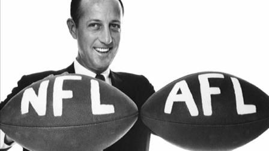

| Page Name | Page Link | |
|---|---|---|
| The Beginning | Home Page/ | The Present/ |
| Page Name | Page Link |
Next is the probably the most important event in the history of professional football in the USA, the merge of the NFL and AFL. Prior to the merge of the two leagues, the NFL thought that it was the bigger league, and that the AFL was would only get second-rate players from the NFL, or washed up NFL players. This changed when the New York Jets drafted Joe Namath from Alabama, and the entire dynamics of both leagues changed. Rather than the NFL being the dominant league, both leagues began to compete for fans, players, and coaches. It came to a point that both leagues were too big to coexist, and the NFL AFL merger occurred. In this, all of the original eight AFL teams became a part of the NFL, and they were put into their own conference. The two conferences became the NFC(National Football Conference) and the AFL(American Football Conference).
